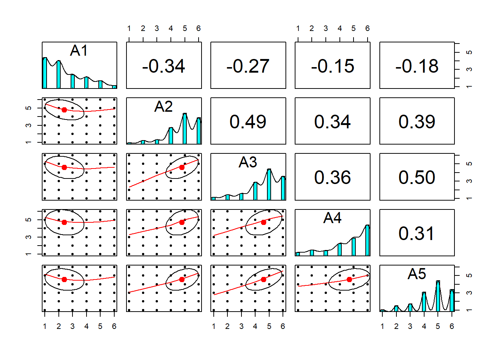
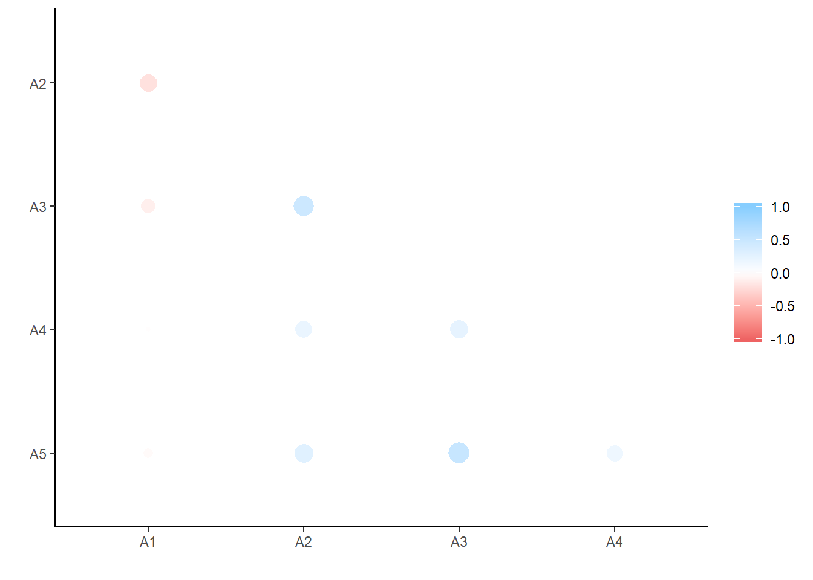
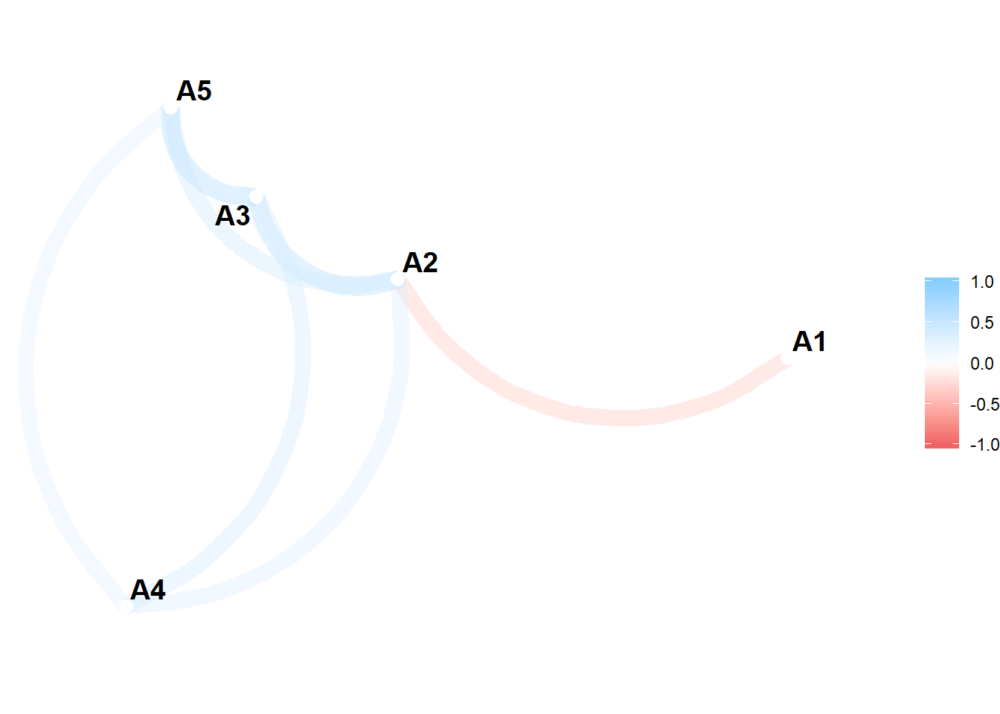
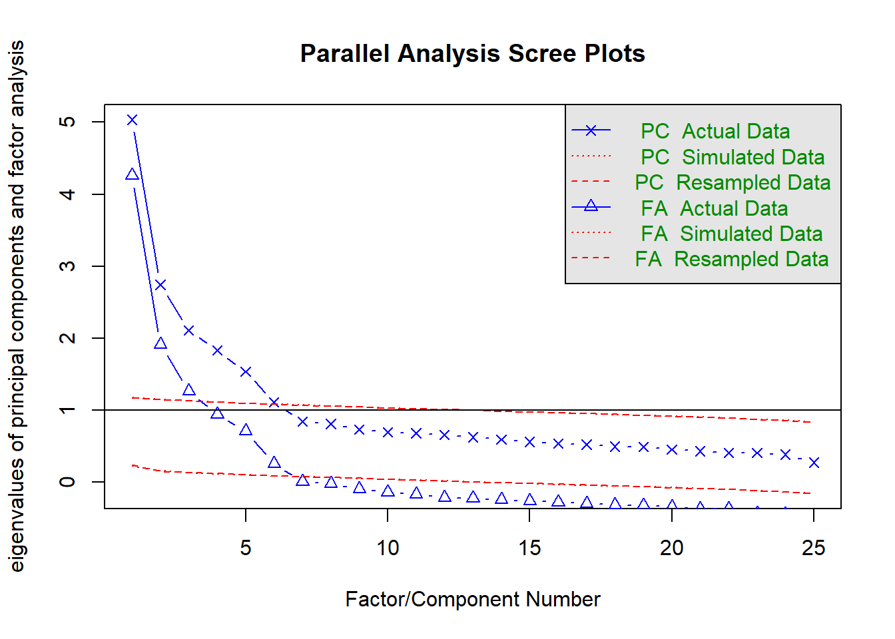
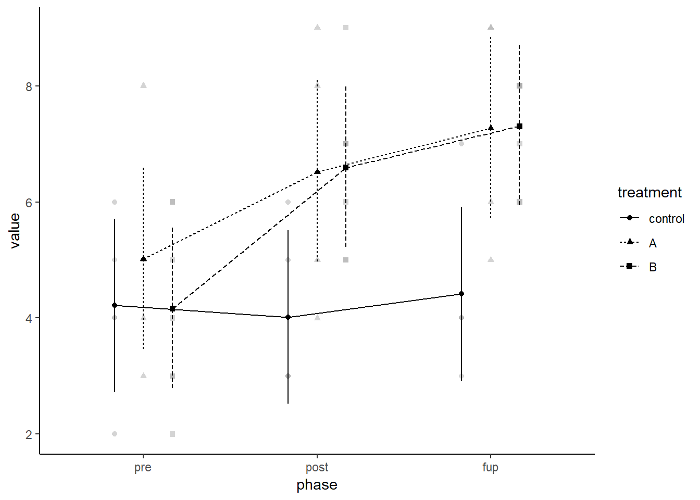

The Tidyverse is a collection of R packages that adhere to the tidy data principles of data analysis and graphing. The purpose of these packages is to make working with data more efficient. The core Tidyverse packages were created by Hadley Wickham, but over the last few years other individuals have added some packages to the collective, which has significantly expanded our data analytical capabilities through improved ease of use and efficiency.
Once data is placed into the appropriate format, you can draw upon hundreds of packages to carry out various analyses. We will cover a few related to Psychology, including factor analysis and scale scoring in the psych package, ANOVA in the afex package, and regression using the built-in lm() function.
For everything to run in the next set of sections, make sure you have installed and loaded the tidyverse, psych, tidyr, and afex.
DplyrPsych and CorrrFirst thing you may want to do is a exploratory factor analysis to identify whether your scales are hanging together. We will also incorporate some dplyr syntax to simplify the process. Let’s use the built-in bfi package containing Big Five personality data to demonstrate some useful functions.
library(psych)
library(tidyverse)## -- Attaching packages ----------------- tidyverse 1.2.1 --## v ggplot2 3.1.0 v purrr 0.3.2
## v tibble 2.1.1 v dplyr 0.8.0.1
## v tidyr 0.8.3 v stringr 1.4.0
## v readr 1.3.1 v forcats 0.4.0## -- Conflicts -------------------- tidyverse_conflicts() --
## x ggplot2::%+%() masks psych::%+%()
## x ggplot2::alpha() masks psych::alpha()
## x dplyr::filter() masks stats::filter()
## x dplyr::lag() masks stats::lag()head(bfi)## A1 A2 A3 A4 A5 C1 C2 C3 C4 C5 E1 E2 E3 E4 E5 N1 N2 N3 N4 N5 O1 O2 O3
## 61617 2 4 3 4 4 2 3 3 4 4 3 3 3 4 4 3 4 2 2 3 3 6 3
## 61618 2 4 5 2 5 5 4 4 3 4 1 1 6 4 3 3 3 3 5 5 4 2 4
## 61620 5 4 5 4 4 4 5 4 2 5 2 4 4 4 5 4 5 4 2 3 4 2 5
## 61621 4 4 6 5 5 4 4 3 5 5 5 3 4 4 4 2 5 2 4 1 3 3 4
## 61622 2 3 3 4 5 4 4 5 3 2 2 2 5 4 5 2 3 4 4 3 3 3 4
## 61623 6 6 5 6 5 6 6 6 1 3 2 1 6 5 6 3 5 2 2 3 4 3 5
## O4 O5 gender education age
## 61617 4 3 1 NA 16
## 61618 3 3 2 NA 18
## 61620 5 2 2 NA 17
## 61621 3 5 2 NA 17
## 61622 3 3 1 NA 17
## 61623 6 1 2 3 21First, psych has some useful shortcuts for descriptive statistics. While I tend to prefer using tidyverse in combination with mutate, group_by and summarize, the describe and describeBy functions have similiar capabilities.
describe(bfi[,1:5])## vars n mean sd median trimmed mad min max range skew kurtosis
## A1 1 2784 2.41 1.41 2 2.23 1.48 1 6 5 0.83 -0.31
## A2 2 2773 4.80 1.17 5 4.98 1.48 1 6 5 -1.12 1.05
## A3 3 2774 4.60 1.30 5 4.79 1.48 1 6 5 -1.00 0.44
## A4 4 2781 4.70 1.48 5 4.93 1.48 1 6 5 -1.03 0.04
## A5 5 2784 4.56 1.26 5 4.71 1.48 1 6 5 -0.85 0.16
## se
## A1 0.03
## A2 0.02
## A3 0.02
## A4 0.03
## A5 0.02describeBy(bfi[,1:5], group = bfi$gender) # Compare agreeable item responses across genders##
## Descriptive statistics by group
## group: 1
## vars n mean sd median trimmed mad min max range skew kurtosis
## A1 1 918 2.73 1.43 2 2.62 1.48 1 6 5 0.56 -0.69
## A2 2 908 4.50 1.26 5 4.65 1.48 1 6 5 -0.89 0.34
## A3 3 912 4.34 1.33 5 4.47 1.48 1 6 5 -0.75 -0.11
## A4 4 916 4.43 1.48 5 4.60 1.48 1 6 5 -0.76 -0.39
## A5 5 915 4.38 1.32 5 4.51 1.48 1 6 5 -0.72 -0.20
## se
## A1 0.05
## A2 0.04
## A3 0.04
## A4 0.05
## A5 0.04
## --------------------------------------------------------
## group: 2
## vars n mean sd median trimmed mad min max range skew kurtosis
## A1 1 1866 2.26 1.37 2 2.05 1.48 1 6 5 0.99 0.04
## A2 2 1865 4.95 1.09 5 5.12 1.48 1 6 5 -1.24 1.55
## A3 3 1862 4.73 1.27 5 4.93 1.48 1 6 5 -1.15 0.90
## A4 4 1865 4.83 1.46 5 5.09 1.48 1 6 5 -1.20 0.41
## A5 5 1869 4.65 1.22 5 4.80 1.48 1 6 5 -0.90 0.36
## se
## A1 0.03
## A2 0.03
## A3 0.03
## A4 0.03
## A5 0.03A second common step is to run a correlation matrix on your data to get a sense of variable associations. psych offers a few useful functions, such as lowerCor() to return rounded values for the lower diagonal of a matrix and pairs.panels() to visualize scatterplots for whole data frames. However, I prefer the corrr package because it is tidy (hence works with tidyverse), offers better visualizations, and has more functionality for working with correlation matrices. Demonstrations of both are provided below for just the agreeableness items in bfi.
# Psych functions
lowerCor(bfi[,1:5])## A1 A2 A3 A4 A5
## A1 1.00
## A2 -0.34 1.00
## A3 -0.27 0.49 1.00
## A4 -0.15 0.34 0.36 1.00
## A5 -0.18 0.39 0.50 0.31 1.00pairs.panels(bfi[,1:5])
# Demonstrate functions for corrr
library(corrr)
d <- correlate(bfi[,1:5]) # Start with correlate which returns matrix as a tibble (amenable to dplyr)##
## Correlation method: 'pearson'
## Missing treated using: 'pairwise.complete.obs'd # Note differences fro psych display## # A tibble: 5 x 6
## rowname A1 A2 A3 A4 A5
## <chr> <dbl> <dbl> <dbl> <dbl> <dbl>
## 1 A1 NA -0.340 -0.265 -0.146 -0.181
## 2 A2 -0.340 NA 0.485 0.335 0.390
## 3 A3 -0.265 0.485 NA 0.360 0.504
## 4 A4 -0.146 0.335 0.360 NA 0.308
## 5 A5 -0.181 0.390 0.504 0.308 NAd %>% shave() %>% fashion() # remove upper right triangle and print in pretty fashion## rowname A1 A2 A3 A4 A5
## 1 A1
## 2 A2 -.34
## 3 A3 -.27 .49
## 4 A4 -.15 .34 .36
## 5 A5 -.18 .39 .50 .31d %>% shave() %>% stretch() %>%
na.omit() %>% filter(r > .50) # remove upper triangle, stretch into long format while omitting missing, and then find strongest correlations## # A tibble: 1 x 3
## x y r
## <chr> <chr> <dbl>
## 1 A3 A5 0.504d %>% shave() %>% rplot # plot correlations according to size and direction
network_plot(d) # network plot of correlations
Psych places special emphasis on classical and modern approaches to psychometrics. Indeed, it was primarily built as a psychometrics package. See the documentation to learn about all its capabilities. One common goal in psychometrics as an attempt either to describe (components) or to explain (factors) the relationships between many observed variables in terms of a more limited set of components or latent factors.Two functions I particularly like are fa.parallel and fa. fa.parallel runs parallel factor techniques which compare observed eigen values of a correlation matrix with those of random data. fa uns exploratory factor analysis in the sense you need not specify which items load onto which factors; however, you must indicate the expected number of factors with the nfactor argument (default is 1). There are a variety of estimation methods, with the default being minimum residual factor analysis (can be changed with the fm function). Illustrations with the entire big five dataset are provided below.
fa.parallel(bfi[, 1:25]) # parallel analysis on entire big five item set
## Parallel analysis suggests that the number of factors = 6 and the number of components = 6bfi_f <- fa(bfi[,1:25], nfactors = 5, rotate = "oblimin", fm = "ml") # efa on bfi items, extracting 5 factors using maximum likelihood## Loading required namespace: GPArotationprint(bfi_f, sort = TRUE) # present factor loadings from highest to lowest## Factor Analysis using method = ml
## Call: fa(r = bfi[, 1:25], nfactors = 5, rotate = "oblimin", fm = "ml")
## Standardized loadings (pattern matrix) based upon correlation matrix
## item ML2 ML3 ML5 ML1 ML4 h2 u2 com
## N1 16 0.85 0.01 -0.09 -0.09 -0.05 0.71 0.29 1.1
## N2 17 0.82 0.02 -0.08 -0.04 0.01 0.66 0.34 1.0
## N3 18 0.67 -0.06 0.10 0.14 0.03 0.53 0.47 1.2
## N5 20 0.44 -0.02 0.22 0.25 -0.14 0.34 0.66 2.4
## C4 9 0.12 -0.64 0.06 0.04 -0.03 0.47 0.53 1.1
## C2 7 0.13 0.64 0.11 0.13 0.06 0.43 0.57 1.2
## C5 10 0.14 -0.57 0.01 0.16 0.10 0.43 0.57 1.4
## C3 8 0.04 0.56 0.11 0.08 -0.06 0.32 0.68 1.1
## C1 6 0.06 0.53 0.00 0.05 0.16 0.32 0.68 1.2
## A3 3 -0.03 0.03 0.67 -0.07 0.04 0.51 0.49 1.0
## A2 2 -0.02 0.09 0.60 0.01 0.03 0.40 0.60 1.1
## A5 5 -0.14 0.00 0.58 -0.17 0.06 0.48 0.52 1.3
## A4 4 -0.06 0.20 0.46 -0.04 -0.15 0.29 0.71 1.7
## A1 1 0.20 0.04 -0.36 -0.14 -0.04 0.15 0.85 2.0
## E2 12 0.06 -0.03 -0.09 0.67 -0.07 0.55 0.45 1.1
## E1 11 -0.09 0.10 -0.10 0.56 -0.11 0.37 0.63 1.3
## E4 14 0.00 0.01 0.36 -0.53 -0.05 0.52 0.48 1.8
## N4 19 0.41 -0.16 0.09 0.42 0.08 0.48 0.52 2.4
## E5 15 0.18 0.27 0.08 -0.39 0.22 0.40 0.60 3.1
## E3 13 0.06 -0.02 0.30 -0.34 0.31 0.44 0.56 3.0
## O3 23 0.01 0.00 0.09 -0.10 0.63 0.47 0.53 1.1
## O1 21 -0.01 0.06 0.02 -0.06 0.53 0.32 0.68 1.1
## O5 25 0.11 -0.05 0.10 -0.07 -0.52 0.27 0.73 1.2
## O2 22 0.16 -0.10 0.21 -0.03 -0.44 0.24 0.76 1.9
## O4 24 0.08 -0.04 0.14 0.36 0.38 0.26 0.74 2.4
##
## ML2 ML3 ML5 ML1 ML4
## SS loadings 2.49 2.05 2.10 2.07 1.64
## Proportion Var 0.10 0.08 0.08 0.08 0.07
## Cumulative Var 0.10 0.18 0.27 0.35 0.41
## Proportion Explained 0.24 0.20 0.20 0.20 0.16
## Cumulative Proportion 0.24 0.44 0.64 0.84 1.00
##
## With factor correlations of
## ML2 ML3 ML5 ML1 ML4
## ML2 1.00 -0.21 -0.03 0.23 -0.01
## ML3 -0.21 1.00 0.20 -0.22 0.20
## ML5 -0.03 0.20 1.00 -0.31 0.23
## ML1 0.23 -0.22 -0.31 1.00 -0.17
## ML4 -0.01 0.20 0.23 -0.17 1.00
##
## Mean item complexity = 1.6
## Test of the hypothesis that 5 factors are sufficient.
##
## The degrees of freedom for the null model are 300 and the objective function was 7.23 with Chi Square of 20163.79
## The degrees of freedom for the model are 185 and the objective function was 0.63
##
## The root mean square of the residuals (RMSR) is 0.03
## The df corrected root mean square of the residuals is 0.04
##
## The harmonic number of observations is 2762 with the empirical chi square 1474.7 with prob < 1.3e-199
## The total number of observations was 2800 with Likelihood Chi Square = 1749.88 with prob < 1.4e-252
##
## Tucker Lewis Index of factoring reliability = 0.872
## RMSEA index = 0.055 and the 90 % confidence intervals are 0.053 0.057
## BIC = 281.47
## Fit based upon off diagonal values = 0.98
## Measures of factor score adequacy
## ML2 ML3 ML5 ML1 ML4
## Correlation of (regression) scores with factors 0.93 0.88 0.88 0.88 0.85
## Multiple R square of scores with factors 0.86 0.77 0.78 0.78 0.72
## Minimum correlation of possible factor scores 0.73 0.54 0.56 0.56 0.44Finally, you can use the score function of psych to score items, run item analyses, and return reliability estimates. To score items on particular scales, we must creat a set of scoring keys. These simply tell us which items go on which scales. Let’s quickly look at the scoring key for the first ten items of the Big Five scale by printing out bfi.dictionary.
head(bfi.dictionary, 10)## ItemLabel Item Giant3
## A1 q_146 Am indifferent to the feelings of others. Cohesion
## A2 q_1162 Inquire about others' well-being. Cohesion
## A3 q_1206 Know how to comfort others. Cohesion
## A4 q_1364 Love children. Cohesion
## A5 q_1419 Make people feel at ease. Cohesion
## C1 q_124 Am exacting in my work. Stability
## C2 q_530 Continue until everything is perfect. Stability
## C3 q_619 Do things according to a plan. Stability
## C4 q_626 Do things in a half-way manner. Stability
## C5 q_1949 Waste my time. Stability
## Big6 Little12 Keying IPIP100
## A1 Agreeableness Compassion -1 B5:A
## A2 Agreeableness Compassion 1 B5:A
## A3 Agreeableness Compassion 1 B5:A
## A4 Agreeableness Compassion 1 B5:A
## A5 Agreeableness Compassion 1 B5:A
## C1 Conscientiousness Orderliness 1 B5:C
## C2 Conscientiousness Orderliness 1 B5:C
## C3 Conscientiousness Orderliness 1 B5:C
## C4 Conscientiousness Industriousness -1 B5:C
## C5 Conscientiousness Industriousness -1 B5:CWe can see agreeableness has 1 negatively keyed item whereas conscientiousness has 2 negatively keyed items. The most intuitive way to create a scoring key is to create a list where each element is a scale containing a vector of keys. This vector can either be the actual names or an integer of their location. YOU also want to insert a - symbol in front of any character or integer to reverse an item. Here is an example for the first ten items of the BFI.
keys.list <- list(Agreeable = c(-1, 2:5), Consc = c(6:8, -9, -10)) #creating scoring key based upon item location, noting where to reverse items based on the bfi.dictionary keying
keys.list2 <- list(Agreeable = c("-A1", "A2", "A3", "A4", "A5"), Consc = c("C1", "C2", "C3", "-C4", "-C4")) #creating scoring key based upon item location, noting where to reverse items based on the bfi.dictionary keying
scores <- scoreItems(keys.list, bfi) # providing scoring key followed by data frame
scores # print to investigate descriptive statistics, alpha, scale intercorrelations, and also get scale scores## Call: scoreItems(keys = keys.list, items = bfi)
##
## (Unstandardized) Alpha:
## Agreeable Consc
## alpha 0.7 0.72
##
## Standard errors of unstandardized Alpha:
## Agreeable Consc
## ASE 0.014 0.014
##
## Average item correlation:
## Agreeable Consc
## average.r 0.32 0.34
##
## Median item correlation:
## Agreeable Consc
## 0.34 0.34
##
## Guttman 6* reliability:
## Agreeable Consc
## Lambda.6 0.68 0.7
##
## Signal/Noise based upon av.r :
## Agreeable Consc
## Signal/Noise 2.3 2.6
##
## Scale intercorrelations corrected for attenuation
## raw correlations below the diagonal, alpha on the diagonal
## corrected correlations above the diagonal:
## Agreeable Consc
## Agreeable 0.70 0.36
## Consc 0.26 0.72
##
## In order to see the item by scale loadings and frequency counts of the data
## print with the short option = FALSEWe can see the internal consistency for agreeableness (.70) and conscientiousness (.72) are adequate, the average item correlations are on the lower but typical end for personality scales (.32 to .34), and the two scales have only a modest correlation of .26 suggesting adequate divergent validity. scores also contains the actual scores which you can easily extract and add into your data frame.
head(scores$scores)## Agreeable Consc
## 61617 4.0 2.8
## 61618 4.2 4.0
## 61620 3.8 4.0
## 61621 4.6 3.0
## 61622 4.0 4.4
## 61623 4.6 5.6bfi_ac <- cbind(bfi, scores$scores)a <- NAPS %>% dplyr::select(T1_PANAS1:T1_PANAS20) %>% na.omit # Eliminate NA and select only PANAS items
fa(a)There appears to be a problem with T1_PANAS8. Let’s explore closer.
glimpse(a)
cor(a)Identified PANAS_8 as having zero variance, thus throwing an error. Eliminate from analysis.
library(psych)
a <- NAPS %>% dplyr::select(T1_PANAS1:T1_PANAS20) %>% na.omit
ab <- a %>% dplyr::select(-T1_PANAS8)Run a parallel analysis to determine number of factors to extract.
fa.parallel(ab)Run of the mill factor analysis, pulling out 2 factors given theory and parallel analysis. Used varimax by default.
fac <- fa(ab, nfactors = 2, rotate = "varimax") # fa to run exploratory factor analysis
print(fac, sort=TRUE) # Sort loadingsscore function to automatically run item analyses, reliability, and calculate your scale scores for just the positive affect PANAS items. Add the scores to your dataset. The items are as follows: T1_PANAS1, T1_PANAS3, T1_PANAS5, T1_PANAS9, T1_PANAS10, T1_PANAS12, T1_PANAS14, T1_PANAS16, T1_PANAS17, T1_PANAS19keys.list <- list(PA = c("T1_PANAS1", "T1_PANAS3", "T1_PANAS5", "T1_PANAS9", "T1_PANAS10", "T1_PANAS12", "T1_PANAS14", "T1_PANAS16",
"T1_PANAS17", "T1_PANAS19"))
PAscore <- scoreItems(keys.list, NAPS)
NAPS <- cbind(NAPS, PAscore$scores)Tidy data is data that’s easy to work with: it’s easy to munge (with dplyr), visualise (with ggplot2 or ggvis) and model (with R’s hundreds of modelling packages). In order to facilitate the data analysis pipeline, it is crucial to have tidy data. What this means is that every column in your data frame represents a variable and every row represents an observation. This is also referred to as long format (as opposed to wide format).
Gather takes a wide data set and makes it long. This occurs when our data is “unstacked”, meaning a common attribute or variable of concern is spread out across columns. In Psychology, the time of measurement is often spread across multiple columns with the same outcome being measured at each point. Other examples include within-person factors, splitting data by a group (e.g., male aggression, female aggression as separate columns), or measures from different people using the same tool (e.g., mother’s depression, father’s depression). Here are the main arguments for gather.
| Argument | Description |
|---|---|
data |
A data frame |
key |
Name of new column which will store the condition/IV columns which are spread out across your data |
value |
Name of new column which stores the response/DV values in the cells. |
... |
A selection of columns to be collapsed into the key column. Select a range with : or exclude columns with -. If blank, all columns are collapsed. |
Keys specify the name of a new column in which you will gather up several pre-existing colum names and assemble together. Values will also create a new column, but one which represents whatever the data in the cells represent. You can think of keys as corresponding to the columns of a variable which is too wide and the values as representing the same kind of information stored under each of these columns. Let’s look at a few examples. Below I will simulate fake data where participants were asked to rate three different faces on attractiveness on a scale of 1 to 10.
set.seed(1)
wide <- data.frame(
ID = c(1:10),
Face.1 = round(rnorm(10, 7, 1), 0),
Face.2 = round(rnorm(10, 5, 1), 0),
Face.3 = round(rnorm(10, 3, 1), 0)
)
wide## ID Face.1 Face.2 Face.3
## 1 1 6 7 4
## 2 2 7 5 4
## 3 3 6 4 3
## 4 4 9 3 1
## 5 5 7 6 4
## 6 6 6 5 3
## 7 7 7 5 3
## 8 8 8 6 2
## 9 9 8 6 3
## 10 10 7 6 3This dataset is messy. As you can see, only ID is stored in a single column. Attractiveness rating (the DV) is split between the three faces, such that responses are in both rows and columns. What we want instead is one column for condition (Face.1, Face.2, or Face.3) responses and a column for attractiveness ratings, with each row being a singular observation for each participant. Participants IDs should repeat as this is a within-subect design (each participant saw each face). We can use gather to fix this issue.
long <- gather(wide, Face, Attractive, Face.1:Face.3)Let’s take another example. Say we are doing a health experiment involving excercise (condition 2) or no activity (condition 1) as a between-subject IV and administering two types of drugs (a and b) as a within-person IV. At each drug administration we measure the participant’s heart rate. Hypothetical data is presented below.
messy <- data.frame(
name = c("Wilbur", "Petunia", "Gregory", "Joe"),
sex = c("m", "f", "m", "m"),
condition = rep(1:2, each = 2),
druga = c(67, 80, 64, 101),
drugb = c(56, 90, 50, 66)
)
messy## name sex condition druga drugb
## 1 Wilbur m 1 67 56
## 2 Petunia f 1 80 90
## 3 Gregory m 2 64 50
## 4 Joe m 2 101 66What would we want to gather up inside of this data frame? In other words, where is there an attribute being split across columns with the same information store below? In this scenario, drug is the attribute we can gather up into its own column whereas heart rate is the corresponding value being measured. We can fix this as follows.
tidied <- gather(messy, drug, heartrate, c(druga, drugb))
tidied## name sex condition drug heartrate
## 1 Wilbur m 1 druga 67
## 2 Petunia f 1 druga 80
## 3 Gregory m 2 druga 64
## 4 Joe m 2 druga 101
## 5 Wilbur m 1 drugb 56
## 6 Petunia f 1 drugb 90
## 7 Gregory m 2 drugb 50
## 8 Joe m 2 drugb 66Sometimes two variables or more variables are clumped together in one column. The separate() function allows you to tease them apart and typically requires at least 4 arguments.
| Argument | Description |
|---|---|
data |
A data frame |
col |
Name of the column you wish to split apart |
into |
Names of new variables you want to split the col into. |
sep |
The separator between attributes in the col argument. If a character (e.g., “a”, "_", etc…), is interpreted as a regular expression. The default is a reg expression matching any sequence. Ifnumberic, interpreted as position to split (e.g., 4 characters in). POsitive values start at 1 position on left, negative values start -1 at at far right. |
Take a hypothetical study on work-family distraction. We are measuring how much people get distracted by their phone at both work and home at two time points. Participants are assigned to a mindfulness intervention (treatment) or nothing (control).
set.seed(10)
messy <- data.frame(
id = 1:4,
trt = sample(rep(c('control', 'treatment'), each = 2)),
work.T1 = runif(4),
home.T1 = runif(4),
work.T2 = runif(4),
home.T2 = runif(4)
)
messy## id trt work.T1 home.T1 work.T2 home.T2
## 1 1 treatment 0.08513597 0.6158293 0.1135090 0.05190332
## 2 2 control 0.22543662 0.4296715 0.5959253 0.26417767
## 3 3 treatment 0.27453052 0.6516557 0.3580500 0.39879073
## 4 4 control 0.27230507 0.5677378 0.4288094 0.83613414In this dataset, we would first want to gather the last 4 columns into a key column and the cell phone distraction into a value column called time. Once in long format, we then then separate the location (work v home) from the time point (T1 v T2) based upon the . which always delimits the two attributes. We will need to escape the period with two forward slashes, \\, so R does not interpret it as a special regex symbol. Here is how this could be specified.
tidier <- gather(messy, key, time, -id, -trt) # Easier to say do NOT collapse id and treatment. R will understand to collapse all remaining columns.
tidier## id trt key time
## 1 1 treatment work.T1 0.08513597
## 2 2 control work.T1 0.22543662
## 3 3 treatment work.T1 0.27453052
## 4 4 control work.T1 0.27230507
## 5 1 treatment home.T1 0.61582931
## 6 2 control home.T1 0.42967153
## 7 3 treatment home.T1 0.65165567
## 8 4 control home.T1 0.56773775
## 9 1 treatment work.T2 0.11350898
## 10 2 control work.T2 0.59592531
## 11 3 treatment work.T2 0.35804998
## 12 4 control work.T2 0.42880942
## 13 1 treatment home.T2 0.05190332
## 14 2 control home.T2 0.26417767
## 15 3 treatment home.T2 0.39879073
## 16 4 control home.T2 0.83613414tidy <- tidier %>%
separate(key, into = c("Location", "Time Point"), sep = "\\.")
tidy## id trt Location Time Point time
## 1 1 treatment work T1 0.08513597
## 2 2 control work T1 0.22543662
## 3 3 treatment work T1 0.27453052
## 4 4 control work T1 0.27230507
## 5 1 treatment home T1 0.61582931
## 6 2 control home T1 0.42967153
## 7 3 treatment home T1 0.65165567
## 8 4 control home T1 0.56773775
## 9 1 treatment work T2 0.11350898
## 10 2 control work T2 0.59592531
## 11 3 treatment work T2 0.35804998
## 12 4 control work T2 0.42880942
## 13 1 treatment home T2 0.05190332
## 14 2 control home T2 0.26417767
## 15 3 treatment home T2 0.39879073
## 16 4 control home T2 0.83613414Finally, spread() is the complement of gather(). It takes long data frames and spreads it out to make it wide. Sometimes this is useful if exporting data to different programs, if a function requires wide (although this is rare in R), or just for presentation sake. The spread arguments are as follows.
| Argument | Description |
|---|---|
data |
A data frame |
key |
Name of column whose values will be used as column headings. |
value |
Names of column whos values will populate the cells. |
Remember our long dataframe from above with the faces. Let’s see if we can change this back to its original wide format. In this scenario, we want the different Faces in the Face column to become new columns, one per face, while the actual dependent variable of attractiveness should populate these new face columns. In effect, this command is the reversal of what we did with gather.
spread(long, Face, Attractive)## ID Face.1 Face.2 Face.3
## 1 1 6 7 4
## 2 2 7 5 4
## 3 3 6 4 3
## 4 4 9 3 1
## 5 5 7 6 4
## 6 6 6 5 3
## 7 7 7 5 3
## 8 8 8 6 2
## 9 9 8 6 3
## 10 10 7 6 3And there you have it. You have come full circle back to wide.
There is an untidy dataset called iris built into R. The four columns represent the separate measurement of length and width of sepals and petals on three different flowers. All measures are made in centimeters. Can you tidy this data into just 3 columns?
Tidy the NAPS dataset based upon the 4 VAS columns. Once tidied, separate the columns into Time and Vas.
# Solution 1
head(iris)## Sepal.Length Sepal.Width Petal.Length Petal.Width Species
## 1 5.1 3.5 1.4 0.2 setosa
## 2 4.9 3.0 1.4 0.2 setosa
## 3 4.7 3.2 1.3 0.2 setosa
## 4 4.6 3.1 1.5 0.2 setosa
## 5 5.0 3.6 1.4 0.2 setosa
## 6 5.4 3.9 1.7 0.4 setosagather(iris, PlantMeasure, Centimeters, -Species) #Fastest way is to tell gather to assemble all columns except last one## Species PlantMeasure Centimeters
## 1 setosa Sepal.Length 5.1
## 2 setosa Sepal.Length 4.9
## 3 setosa Sepal.Length 4.7
## 4 setosa Sepal.Length 4.6
## 5 setosa Sepal.Length 5.0
## 6 setosa Sepal.Length 5.4
## 7 setosa Sepal.Length 4.6
## 8 setosa Sepal.Length 5.0
## 9 setosa Sepal.Length 4.4
## 10 setosa Sepal.Length 4.9
## 11 setosa Sepal.Length 5.4
## 12 setosa Sepal.Length 4.8
## 13 setosa Sepal.Length 4.8
## 14 setosa Sepal.Length 4.3
## 15 setosa Sepal.Length 5.8
## 16 setosa Sepal.Length 5.7
## 17 setosa Sepal.Length 5.4
## 18 setosa Sepal.Length 5.1
## 19 setosa Sepal.Length 5.7
## 20 setosa Sepal.Length 5.1
## 21 setosa Sepal.Length 5.4
## 22 setosa Sepal.Length 5.1
## 23 setosa Sepal.Length 4.6
## 24 setosa Sepal.Length 5.1
## 25 setosa Sepal.Length 4.8
## 26 setosa Sepal.Length 5.0
## 27 setosa Sepal.Length 5.0
## 28 setosa Sepal.Length 5.2
## 29 setosa Sepal.Length 5.2
## 30 setosa Sepal.Length 4.7
## 31 setosa Sepal.Length 4.8
## 32 setosa Sepal.Length 5.4
## 33 setosa Sepal.Length 5.2
## 34 setosa Sepal.Length 5.5
## 35 setosa Sepal.Length 4.9
## 36 setosa Sepal.Length 5.0
## 37 setosa Sepal.Length 5.5
## 38 setosa Sepal.Length 4.9
## 39 setosa Sepal.Length 4.4
## 40 setosa Sepal.Length 5.1
## 41 setosa Sepal.Length 5.0
## 42 setosa Sepal.Length 4.5
## 43 setosa Sepal.Length 4.4
## 44 setosa Sepal.Length 5.0
## 45 setosa Sepal.Length 5.1
## 46 setosa Sepal.Length 4.8
## 47 setosa Sepal.Length 5.1
## 48 setosa Sepal.Length 4.6
## 49 setosa Sepal.Length 5.3
## 50 setosa Sepal.Length 5.0
## 51 versicolor Sepal.Length 7.0
## 52 versicolor Sepal.Length 6.4
## 53 versicolor Sepal.Length 6.9
## 54 versicolor Sepal.Length 5.5
## 55 versicolor Sepal.Length 6.5
## 56 versicolor Sepal.Length 5.7
## 57 versicolor Sepal.Length 6.3
## 58 versicolor Sepal.Length 4.9
## 59 versicolor Sepal.Length 6.6
## 60 versicolor Sepal.Length 5.2
## 61 versicolor Sepal.Length 5.0
## 62 versicolor Sepal.Length 5.9
## 63 versicolor Sepal.Length 6.0
## 64 versicolor Sepal.Length 6.1
## 65 versicolor Sepal.Length 5.6
## 66 versicolor Sepal.Length 6.7
## 67 versicolor Sepal.Length 5.6
## 68 versicolor Sepal.Length 5.8
## 69 versicolor Sepal.Length 6.2
## 70 versicolor Sepal.Length 5.6
## 71 versicolor Sepal.Length 5.9
## 72 versicolor Sepal.Length 6.1
## 73 versicolor Sepal.Length 6.3
## 74 versicolor Sepal.Length 6.1
## 75 versicolor Sepal.Length 6.4
## 76 versicolor Sepal.Length 6.6
## 77 versicolor Sepal.Length 6.8
## 78 versicolor Sepal.Length 6.7
## 79 versicolor Sepal.Length 6.0
## 80 versicolor Sepal.Length 5.7
## 81 versicolor Sepal.Length 5.5
## 82 versicolor Sepal.Length 5.5
## 83 versicolor Sepal.Length 5.8
## 84 versicolor Sepal.Length 6.0
## 85 versicolor Sepal.Length 5.4
## 86 versicolor Sepal.Length 6.0
## 87 versicolor Sepal.Length 6.7
## 88 versicolor Sepal.Length 6.3
## 89 versicolor Sepal.Length 5.6
## 90 versicolor Sepal.Length 5.5
## 91 versicolor Sepal.Length 5.5
## 92 versicolor Sepal.Length 6.1
## 93 versicolor Sepal.Length 5.8
## 94 versicolor Sepal.Length 5.0
## 95 versicolor Sepal.Length 5.6
## 96 versicolor Sepal.Length 5.7
## 97 versicolor Sepal.Length 5.7
## 98 versicolor Sepal.Length 6.2
## 99 versicolor Sepal.Length 5.1
## 100 versicolor Sepal.Length 5.7
## 101 virginica Sepal.Length 6.3
## 102 virginica Sepal.Length 5.8
## 103 virginica Sepal.Length 7.1
## 104 virginica Sepal.Length 6.3
## 105 virginica Sepal.Length 6.5
## 106 virginica Sepal.Length 7.6
## 107 virginica Sepal.Length 4.9
## 108 virginica Sepal.Length 7.3
## 109 virginica Sepal.Length 6.7
## 110 virginica Sepal.Length 7.2
## 111 virginica Sepal.Length 6.5
## 112 virginica Sepal.Length 6.4
## 113 virginica Sepal.Length 6.8
## 114 virginica Sepal.Length 5.7
## 115 virginica Sepal.Length 5.8
## 116 virginica Sepal.Length 6.4
## 117 virginica Sepal.Length 6.5
## 118 virginica Sepal.Length 7.7
## 119 virginica Sepal.Length 7.7
## 120 virginica Sepal.Length 6.0
## 121 virginica Sepal.Length 6.9
## 122 virginica Sepal.Length 5.6
## 123 virginica Sepal.Length 7.7
## 124 virginica Sepal.Length 6.3
## 125 virginica Sepal.Length 6.7
## 126 virginica Sepal.Length 7.2
## 127 virginica Sepal.Length 6.2
## 128 virginica Sepal.Length 6.1
## 129 virginica Sepal.Length 6.4
## 130 virginica Sepal.Length 7.2
## 131 virginica Sepal.Length 7.4
## 132 virginica Sepal.Length 7.9
## 133 virginica Sepal.Length 6.4
## 134 virginica Sepal.Length 6.3
## 135 virginica Sepal.Length 6.1
## 136 virginica Sepal.Length 7.7
## 137 virginica Sepal.Length 6.3
## 138 virginica Sepal.Length 6.4
## 139 virginica Sepal.Length 6.0
## 140 virginica Sepal.Length 6.9
## 141 virginica Sepal.Length 6.7
## 142 virginica Sepal.Length 6.9
## 143 virginica Sepal.Length 5.8
## 144 virginica Sepal.Length 6.8
## 145 virginica Sepal.Length 6.7
## 146 virginica Sepal.Length 6.7
## 147 virginica Sepal.Length 6.3
## 148 virginica Sepal.Length 6.5
## 149 virginica Sepal.Length 6.2
## 150 virginica Sepal.Length 5.9
## 151 setosa Sepal.Width 3.5
## 152 setosa Sepal.Width 3.0
## 153 setosa Sepal.Width 3.2
## 154 setosa Sepal.Width 3.1
## 155 setosa Sepal.Width 3.6
## 156 setosa Sepal.Width 3.9
## 157 setosa Sepal.Width 3.4
## 158 setosa Sepal.Width 3.4
## 159 setosa Sepal.Width 2.9
## 160 setosa Sepal.Width 3.1
## 161 setosa Sepal.Width 3.7
## 162 setosa Sepal.Width 3.4
## 163 setosa Sepal.Width 3.0
## 164 setosa Sepal.Width 3.0
## 165 setosa Sepal.Width 4.0
## 166 setosa Sepal.Width 4.4
## 167 setosa Sepal.Width 3.9
## 168 setosa Sepal.Width 3.5
## 169 setosa Sepal.Width 3.8
## 170 setosa Sepal.Width 3.8
## 171 setosa Sepal.Width 3.4
## 172 setosa Sepal.Width 3.7
## 173 setosa Sepal.Width 3.6
## 174 setosa Sepal.Width 3.3
## 175 setosa Sepal.Width 3.4
## 176 setosa Sepal.Width 3.0
## 177 setosa Sepal.Width 3.4
## 178 setosa Sepal.Width 3.5
## 179 setosa Sepal.Width 3.4
## 180 setosa Sepal.Width 3.2
## 181 setosa Sepal.Width 3.1
## 182 setosa Sepal.Width 3.4
## 183 setosa Sepal.Width 4.1
## 184 setosa Sepal.Width 4.2
## 185 setosa Sepal.Width 3.1
## 186 setosa Sepal.Width 3.2
## 187 setosa Sepal.Width 3.5
## 188 setosa Sepal.Width 3.6
## 189 setosa Sepal.Width 3.0
## 190 setosa Sepal.Width 3.4
## 191 setosa Sepal.Width 3.5
## 192 setosa Sepal.Width 2.3
## 193 setosa Sepal.Width 3.2
## 194 setosa Sepal.Width 3.5
## 195 setosa Sepal.Width 3.8
## 196 setosa Sepal.Width 3.0
## 197 setosa Sepal.Width 3.8
## 198 setosa Sepal.Width 3.2
## 199 setosa Sepal.Width 3.7
## 200 setosa Sepal.Width 3.3
## 201 versicolor Sepal.Width 3.2
## 202 versicolor Sepal.Width 3.2
## 203 versicolor Sepal.Width 3.1
## 204 versicolor Sepal.Width 2.3
## 205 versicolor Sepal.Width 2.8
## 206 versicolor Sepal.Width 2.8
## 207 versicolor Sepal.Width 3.3
## 208 versicolor Sepal.Width 2.4
## 209 versicolor Sepal.Width 2.9
## 210 versicolor Sepal.Width 2.7
## 211 versicolor Sepal.Width 2.0
## 212 versicolor Sepal.Width 3.0
## 213 versicolor Sepal.Width 2.2
## 214 versicolor Sepal.Width 2.9
## 215 versicolor Sepal.Width 2.9
## 216 versicolor Sepal.Width 3.1
## 217 versicolor Sepal.Width 3.0
## 218 versicolor Sepal.Width 2.7
## 219 versicolor Sepal.Width 2.2
## 220 versicolor Sepal.Width 2.5
## 221 versicolor Sepal.Width 3.2
## 222 versicolor Sepal.Width 2.8
## 223 versicolor Sepal.Width 2.5
## 224 versicolor Sepal.Width 2.8
## 225 versicolor Sepal.Width 2.9
## 226 versicolor Sepal.Width 3.0
## 227 versicolor Sepal.Width 2.8
## 228 versicolor Sepal.Width 3.0
## 229 versicolor Sepal.Width 2.9
## 230 versicolor Sepal.Width 2.6
## 231 versicolor Sepal.Width 2.4
## 232 versicolor Sepal.Width 2.4
## 233 versicolor Sepal.Width 2.7
## 234 versicolor Sepal.Width 2.7
## 235 versicolor Sepal.Width 3.0
## 236 versicolor Sepal.Width 3.4
## 237 versicolor Sepal.Width 3.1
## 238 versicolor Sepal.Width 2.3
## 239 versicolor Sepal.Width 3.0
## 240 versicolor Sepal.Width 2.5
## 241 versicolor Sepal.Width 2.6
## 242 versicolor Sepal.Width 3.0
## 243 versicolor Sepal.Width 2.6
## 244 versicolor Sepal.Width 2.3
## 245 versicolor Sepal.Width 2.7
## 246 versicolor Sepal.Width 3.0
## 247 versicolor Sepal.Width 2.9
## 248 versicolor Sepal.Width 2.9
## 249 versicolor Sepal.Width 2.5
## 250 versicolor Sepal.Width 2.8
## 251 virginica Sepal.Width 3.3
## 252 virginica Sepal.Width 2.7
## 253 virginica Sepal.Width 3.0
## 254 virginica Sepal.Width 2.9
## 255 virginica Sepal.Width 3.0
## 256 virginica Sepal.Width 3.0
## 257 virginica Sepal.Width 2.5
## 258 virginica Sepal.Width 2.9
## 259 virginica Sepal.Width 2.5
## 260 virginica Sepal.Width 3.6
## 261 virginica Sepal.Width 3.2
## 262 virginica Sepal.Width 2.7
## 263 virginica Sepal.Width 3.0
## 264 virginica Sepal.Width 2.5
## 265 virginica Sepal.Width 2.8
## 266 virginica Sepal.Width 3.2
## 267 virginica Sepal.Width 3.0
## 268 virginica Sepal.Width 3.8
## 269 virginica Sepal.Width 2.6
## 270 virginica Sepal.Width 2.2
## 271 virginica Sepal.Width 3.2
## 272 virginica Sepal.Width 2.8
## 273 virginica Sepal.Width 2.8
## 274 virginica Sepal.Width 2.7
## 275 virginica Sepal.Width 3.3
## 276 virginica Sepal.Width 3.2
## 277 virginica Sepal.Width 2.8
## 278 virginica Sepal.Width 3.0
## 279 virginica Sepal.Width 2.8
## 280 virginica Sepal.Width 3.0
## 281 virginica Sepal.Width 2.8
## 282 virginica Sepal.Width 3.8
## 283 virginica Sepal.Width 2.8
## 284 virginica Sepal.Width 2.8
## 285 virginica Sepal.Width 2.6
## 286 virginica Sepal.Width 3.0
## 287 virginica Sepal.Width 3.4
## 288 virginica Sepal.Width 3.1
## 289 virginica Sepal.Width 3.0
## 290 virginica Sepal.Width 3.1
## 291 virginica Sepal.Width 3.1
## 292 virginica Sepal.Width 3.1
## 293 virginica Sepal.Width 2.7
## 294 virginica Sepal.Width 3.2
## 295 virginica Sepal.Width 3.3
## 296 virginica Sepal.Width 3.0
## 297 virginica Sepal.Width 2.5
## 298 virginica Sepal.Width 3.0
## 299 virginica Sepal.Width 3.4
## 300 virginica Sepal.Width 3.0
## 301 setosa Petal.Length 1.4
## 302 setosa Petal.Length 1.4
## 303 setosa Petal.Length 1.3
## 304 setosa Petal.Length 1.5
## 305 setosa Petal.Length 1.4
## 306 setosa Petal.Length 1.7
## 307 setosa Petal.Length 1.4
## 308 setosa Petal.Length 1.5
## 309 setosa Petal.Length 1.4
## 310 setosa Petal.Length 1.5
## 311 setosa Petal.Length 1.5
## 312 setosa Petal.Length 1.6
## 313 setosa Petal.Length 1.4
## 314 setosa Petal.Length 1.1
## 315 setosa Petal.Length 1.2
## 316 setosa Petal.Length 1.5
## 317 setosa Petal.Length 1.3
## 318 setosa Petal.Length 1.4
## 319 setosa Petal.Length 1.7
## 320 setosa Petal.Length 1.5
## 321 setosa Petal.Length 1.7
## 322 setosa Petal.Length 1.5
## 323 setosa Petal.Length 1.0
## 324 setosa Petal.Length 1.7
## 325 setosa Petal.Length 1.9
## 326 setosa Petal.Length 1.6
## 327 setosa Petal.Length 1.6
## 328 setosa Petal.Length 1.5
## 329 setosa Petal.Length 1.4
## 330 setosa Petal.Length 1.6
## 331 setosa Petal.Length 1.6
## 332 setosa Petal.Length 1.5
## 333 setosa Petal.Length 1.5
## 334 setosa Petal.Length 1.4
## 335 setosa Petal.Length 1.5
## 336 setosa Petal.Length 1.2
## 337 setosa Petal.Length 1.3
## 338 setosa Petal.Length 1.4
## 339 setosa Petal.Length 1.3
## 340 setosa Petal.Length 1.5
## 341 setosa Petal.Length 1.3
## 342 setosa Petal.Length 1.3
## 343 setosa Petal.Length 1.3
## 344 setosa Petal.Length 1.6
## 345 setosa Petal.Length 1.9
## 346 setosa Petal.Length 1.4
## 347 setosa Petal.Length 1.6
## 348 setosa Petal.Length 1.4
## 349 setosa Petal.Length 1.5
## 350 setosa Petal.Length 1.4
## 351 versicolor Petal.Length 4.7
## 352 versicolor Petal.Length 4.5
## 353 versicolor Petal.Length 4.9
## 354 versicolor Petal.Length 4.0
## 355 versicolor Petal.Length 4.6
## 356 versicolor Petal.Length 4.5
## 357 versicolor Petal.Length 4.7
## 358 versicolor Petal.Length 3.3
## 359 versicolor Petal.Length 4.6
## 360 versicolor Petal.Length 3.9
## 361 versicolor Petal.Length 3.5
## 362 versicolor Petal.Length 4.2
## 363 versicolor Petal.Length 4.0
## 364 versicolor Petal.Length 4.7
## 365 versicolor Petal.Length 3.6
## 366 versicolor Petal.Length 4.4
## 367 versicolor Petal.Length 4.5
## 368 versicolor Petal.Length 4.1
## 369 versicolor Petal.Length 4.5
## 370 versicolor Petal.Length 3.9
## 371 versicolor Petal.Length 4.8
## 372 versicolor Petal.Length 4.0
## 373 versicolor Petal.Length 4.9
## 374 versicolor Petal.Length 4.7
## 375 versicolor Petal.Length 4.3
## 376 versicolor Petal.Length 4.4
## 377 versicolor Petal.Length 4.8
## 378 versicolor Petal.Length 5.0
## 379 versicolor Petal.Length 4.5
## 380 versicolor Petal.Length 3.5
## 381 versicolor Petal.Length 3.8
## 382 versicolor Petal.Length 3.7
## 383 versicolor Petal.Length 3.9
## 384 versicolor Petal.Length 5.1
## 385 versicolor Petal.Length 4.5
## 386 versicolor Petal.Length 4.5
## 387 versicolor Petal.Length 4.7
## 388 versicolor Petal.Length 4.4
## 389 versicolor Petal.Length 4.1
## 390 versicolor Petal.Length 4.0
## 391 versicolor Petal.Length 4.4
## 392 versicolor Petal.Length 4.6
## 393 versicolor Petal.Length 4.0
## 394 versicolor Petal.Length 3.3
## 395 versicolor Petal.Length 4.2
## 396 versicolor Petal.Length 4.2
## 397 versicolor Petal.Length 4.2
## 398 versicolor Petal.Length 4.3
## 399 versicolor Petal.Length 3.0
## 400 versicolor Petal.Length 4.1
## 401 virginica Petal.Length 6.0
## 402 virginica Petal.Length 5.1
## 403 virginica Petal.Length 5.9
## 404 virginica Petal.Length 5.6
## 405 virginica Petal.Length 5.8
## 406 virginica Petal.Length 6.6
## 407 virginica Petal.Length 4.5
## 408 virginica Petal.Length 6.3
## 409 virginica Petal.Length 5.8
## 410 virginica Petal.Length 6.1
## 411 virginica Petal.Length 5.1
## 412 virginica Petal.Length 5.3
## 413 virginica Petal.Length 5.5
## 414 virginica Petal.Length 5.0
## 415 virginica Petal.Length 5.1
## 416 virginica Petal.Length 5.3
## 417 virginica Petal.Length 5.5
## 418 virginica Petal.Length 6.7
## 419 virginica Petal.Length 6.9
## 420 virginica Petal.Length 5.0
## 421 virginica Petal.Length 5.7
## 422 virginica Petal.Length 4.9
## 423 virginica Petal.Length 6.7
## 424 virginica Petal.Length 4.9
## 425 virginica Petal.Length 5.7
## 426 virginica Petal.Length 6.0
## 427 virginica Petal.Length 4.8
## 428 virginica Petal.Length 4.9
## 429 virginica Petal.Length 5.6
## 430 virginica Petal.Length 5.8
## 431 virginica Petal.Length 6.1
## 432 virginica Petal.Length 6.4
## 433 virginica Petal.Length 5.6
## 434 virginica Petal.Length 5.1
## 435 virginica Petal.Length 5.6
## 436 virginica Petal.Length 6.1
## 437 virginica Petal.Length 5.6
## 438 virginica Petal.Length 5.5
## 439 virginica Petal.Length 4.8
## 440 virginica Petal.Length 5.4
## 441 virginica Petal.Length 5.6
## 442 virginica Petal.Length 5.1
## 443 virginica Petal.Length 5.1
## 444 virginica Petal.Length 5.9
## 445 virginica Petal.Length 5.7
## 446 virginica Petal.Length 5.2
## 447 virginica Petal.Length 5.0
## 448 virginica Petal.Length 5.2
## 449 virginica Petal.Length 5.4
## 450 virginica Petal.Length 5.1
## 451 setosa Petal.Width 0.2
## 452 setosa Petal.Width 0.2
## 453 setosa Petal.Width 0.2
## 454 setosa Petal.Width 0.2
## 455 setosa Petal.Width 0.2
## 456 setosa Petal.Width 0.4
## 457 setosa Petal.Width 0.3
## 458 setosa Petal.Width 0.2
## 459 setosa Petal.Width 0.2
## 460 setosa Petal.Width 0.1
## 461 setosa Petal.Width 0.2
## 462 setosa Petal.Width 0.2
## 463 setosa Petal.Width 0.1
## 464 setosa Petal.Width 0.1
## 465 setosa Petal.Width 0.2
## 466 setosa Petal.Width 0.4
## 467 setosa Petal.Width 0.4
## 468 setosa Petal.Width 0.3
## 469 setosa Petal.Width 0.3
## 470 setosa Petal.Width 0.3
## 471 setosa Petal.Width 0.2
## 472 setosa Petal.Width 0.4
## 473 setosa Petal.Width 0.2
## 474 setosa Petal.Width 0.5
## 475 setosa Petal.Width 0.2
## 476 setosa Petal.Width 0.2
## 477 setosa Petal.Width 0.4
## 478 setosa Petal.Width 0.2
## 479 setosa Petal.Width 0.2
## 480 setosa Petal.Width 0.2
## 481 setosa Petal.Width 0.2
## 482 setosa Petal.Width 0.4
## 483 setosa Petal.Width 0.1
## 484 setosa Petal.Width 0.2
## 485 setosa Petal.Width 0.2
## 486 setosa Petal.Width 0.2
## 487 setosa Petal.Width 0.2
## 488 setosa Petal.Width 0.1
## 489 setosa Petal.Width 0.2
## 490 setosa Petal.Width 0.2
## 491 setosa Petal.Width 0.3
## 492 setosa Petal.Width 0.3
## 493 setosa Petal.Width 0.2
## 494 setosa Petal.Width 0.6
## 495 setosa Petal.Width 0.4
## 496 setosa Petal.Width 0.3
## 497 setosa Petal.Width 0.2
## 498 setosa Petal.Width 0.2
## 499 setosa Petal.Width 0.2
## 500 setosa Petal.Width 0.2
## 501 versicolor Petal.Width 1.4
## 502 versicolor Petal.Width 1.5
## 503 versicolor Petal.Width 1.5
## 504 versicolor Petal.Width 1.3
## 505 versicolor Petal.Width 1.5
## 506 versicolor Petal.Width 1.3
## 507 versicolor Petal.Width 1.6
## 508 versicolor Petal.Width 1.0
## 509 versicolor Petal.Width 1.3
## 510 versicolor Petal.Width 1.4
## 511 versicolor Petal.Width 1.0
## 512 versicolor Petal.Width 1.5
## 513 versicolor Petal.Width 1.0
## 514 versicolor Petal.Width 1.4
## 515 versicolor Petal.Width 1.3
## 516 versicolor Petal.Width 1.4
## 517 versicolor Petal.Width 1.5
## 518 versicolor Petal.Width 1.0
## 519 versicolor Petal.Width 1.5
## 520 versicolor Petal.Width 1.1
## 521 versicolor Petal.Width 1.8
## 522 versicolor Petal.Width 1.3
## 523 versicolor Petal.Width 1.5
## 524 versicolor Petal.Width 1.2
## 525 versicolor Petal.Width 1.3
## 526 versicolor Petal.Width 1.4
## 527 versicolor Petal.Width 1.4
## 528 versicolor Petal.Width 1.7
## 529 versicolor Petal.Width 1.5
## 530 versicolor Petal.Width 1.0
## 531 versicolor Petal.Width 1.1
## 532 versicolor Petal.Width 1.0
## 533 versicolor Petal.Width 1.2
## 534 versicolor Petal.Width 1.6
## 535 versicolor Petal.Width 1.5
## 536 versicolor Petal.Width 1.6
## 537 versicolor Petal.Width 1.5
## 538 versicolor Petal.Width 1.3
## 539 versicolor Petal.Width 1.3
## 540 versicolor Petal.Width 1.3
## 541 versicolor Petal.Width 1.2
## 542 versicolor Petal.Width 1.4
## 543 versicolor Petal.Width 1.2
## 544 versicolor Petal.Width 1.0
## 545 versicolor Petal.Width 1.3
## 546 versicolor Petal.Width 1.2
## 547 versicolor Petal.Width 1.3
## 548 versicolor Petal.Width 1.3
## 549 versicolor Petal.Width 1.1
## 550 versicolor Petal.Width 1.3
## 551 virginica Petal.Width 2.5
## 552 virginica Petal.Width 1.9
## 553 virginica Petal.Width 2.1
## 554 virginica Petal.Width 1.8
## 555 virginica Petal.Width 2.2
## 556 virginica Petal.Width 2.1
## 557 virginica Petal.Width 1.7
## 558 virginica Petal.Width 1.8
## 559 virginica Petal.Width 1.8
## 560 virginica Petal.Width 2.5
## 561 virginica Petal.Width 2.0
## 562 virginica Petal.Width 1.9
## 563 virginica Petal.Width 2.1
## 564 virginica Petal.Width 2.0
## 565 virginica Petal.Width 2.4
## 566 virginica Petal.Width 2.3
## 567 virginica Petal.Width 1.8
## 568 virginica Petal.Width 2.2
## 569 virginica Petal.Width 2.3
## 570 virginica Petal.Width 1.5
## 571 virginica Petal.Width 2.3
## 572 virginica Petal.Width 2.0
## 573 virginica Petal.Width 2.0
## 574 virginica Petal.Width 1.8
## 575 virginica Petal.Width 2.1
## 576 virginica Petal.Width 1.8
## 577 virginica Petal.Width 1.8
## 578 virginica Petal.Width 1.8
## 579 virginica Petal.Width 2.1
## 580 virginica Petal.Width 1.6
## 581 virginica Petal.Width 1.9
## 582 virginica Petal.Width 2.0
## 583 virginica Petal.Width 2.2
## 584 virginica Petal.Width 1.5
## 585 virginica Petal.Width 1.4
## 586 virginica Petal.Width 2.3
## 587 virginica Petal.Width 2.4
## 588 virginica Petal.Width 1.8
## 589 virginica Petal.Width 1.8
## 590 virginica Petal.Width 2.1
## 591 virginica Petal.Width 2.4
## 592 virginica Petal.Width 2.3
## 593 virginica Petal.Width 1.9
## 594 virginica Petal.Width 2.3
## 595 virginica Petal.Width 2.5
## 596 virginica Petal.Width 2.3
## 597 virginica Petal.Width 1.9
## 598 virginica Petal.Width 2.0
## 599 virginica Petal.Width 2.3
## 600 virginica Petal.Width 1.8# Solution 2
NAPS_t <- gather(NAPS, Key, Value, c("T1_Vas1", "T1_Vas2", "T2_Vas1", "T2_Vas2")) # go from wide to long
NAPS_tidy <- separate(NAPS_t, Key, into = c("Time", "Vas"), sep = "_")Base R packages for ANOVA, especially for unbalanced designs or anything with repeated measures, is very convoluted. Note most statisticians and Big Data scientists rarely, if ever, use ANOVA-like analyses for their models. Rather, most use regression, multilevel models, or more advanced generalized linear models which are more flexible and make fewer assumptions than ANOVA. In many ways, ANOVA is a thing of the past.
Yet, it still has its place and use. This is especially the case in highly controlled experiments or situations with many discrete variables. This need turned many people away from R becuse the analysis of such designs was nasty for many reasons.
The package afex (analysis of factorial experiments), mainly written by Henrik Singmann, eases the process substantially. For all kinds of AN(C)OVA designs (between, within, mixed), you basically need only one function. In addition, it is recommended you install and load the package emmeans which perform all manner of post-hoc comparison and contrasts as well as multcomp which allows for more advanved forms of control for multiple tests.
library(afex) # Need for ANOVA functions## Loading required package: lme4## Loading required package: Matrix##
## Attaching package: 'Matrix'## The following object is masked from 'package:tidyr':
##
## expand## ************
## Welcome to afex. For support visit: http://afex.singmann.science/## - Functions for ANOVAs: aov_car(), aov_ez(), and aov_4()
## - Methods for calculating p-values with mixed(): 'KR', 'S', 'LRT', and 'PB'
## - 'afex_aov' and 'mixed' objects can be passed to emmeans() for follow-up tests
## - NEWS: library('emmeans') now needs to be called explicitly!
## - Get and set global package options with: afex_options()
## - Set orthogonal sum-to-zero contrasts globally: set_sum_contrasts()
## - For example analyses see: browseVignettes("afex")
## ************##
## Attaching package: 'afex'## The following object is masked from 'package:lme4':
##
## lmerlibrary(emmeans) # emmeans loaded for post-hoc pairwise tests and contrasts
library(multcomp) # for advanced control of Type I errors in multiple tests## Loading required package: mvtnorm## Loading required package: survival## Loading required package: TH.data## Loading required package: MASS##
## Attaching package: 'MASS'## The following object is masked from 'package:dplyr':
##
## select##
## Attaching package: 'TH.data'## The following object is masked from 'package:MASS':
##
## geyser##
## Attaching package: 'multcomp'## The following object is masked from 'package:emmeans':
##
## cldlibrary(car) # for obk.long dataset## Loading required package: carData##
## Attaching package: 'car'## The following object is masked from 'package:dplyr':
##
## recode## The following object is masked from 'package:purrr':
##
## some## The following object is masked from 'package:psych':
##
## logitFor this example, we will use the obk.long data set (available in the car package) as well as the fhch2010 example available from afex by typing data("fhch2010"). Let’s first get familiar with the data set (always an important step).
data("obk.long")
?obk.long## starting httpd help server ... donestr(obk.long)## 'data.frame': 240 obs. of 7 variables:
## $ id : Factor w/ 16 levels "1","2","3","4",..: 1 1 1 1 1 1 1 1 1 1 ...
## $ treatment: Factor w/ 3 levels "control","A",..: 1 1 1 1 1 1 1 1 1 1 ...
## $ gender : Factor w/ 2 levels "F","M": 2 2 2 2 2 2 2 2 2 2 ...
## $ age : num -4.75 -4.75 -4.75 -4.75 -4.75 -4.75 -4.75 -4.75 -4.75 -4.75 ...
## $ phase : Factor w/ 3 levels "fup","post","pre": 3 3 3 3 3 2 2 2 2 2 ...
## $ hour : Factor w/ 5 levels "1","2","3","4",..: 1 2 3 4 5 1 2 3 4 5 ...
## $ value : num 1 2 4 2 1 3 2 5 3 2 ...We can see in the description this is an imaginary study in which 16 female and male subjects are divided into three treatments (control, A, and B) and measured at a pre-test, post-test, and follow-up session. Further, within each session, they are measured at five occassions at intervals of one hour, hence hour is nested in phase. Before progressing, one thing to note is the phase has the factors ordered alphabetically as opposed to by the time they occurred (should be pre, post, fup as opposed to the other way around). If you remember from our factor lesson, we can modify these values as such:
obk.long$phase <- factor(obk.long$phase, levels = c("pre", "post", "fup"))
str(obk.long)## 'data.frame': 240 obs. of 7 variables:
## $ id : Factor w/ 16 levels "1","2","3","4",..: 1 1 1 1 1 1 1 1 1 1 ...
## $ treatment: Factor w/ 3 levels "control","A",..: 1 1 1 1 1 1 1 1 1 1 ...
## $ gender : Factor w/ 2 levels "F","M": 2 2 2 2 2 2 2 2 2 2 ...
## $ age : num -4.75 -4.75 -4.75 -4.75 -4.75 -4.75 -4.75 -4.75 -4.75 -4.75 ...
## $ phase : Factor w/ 3 levels "pre","post","fup": 1 1 1 1 1 2 2 2 2 2 ...
## $ hour : Factor w/ 5 levels "1","2","3","4",..: 1 2 3 4 5 1 2 3 4 5 ...
## $ value : num 1 2 4 2 1 3 2 5 3 2 ...We can see they have successfully been reordered. Continuing, the study design has two between-subject factors (gender, treatment) as well as two within-subject (phase, hour). The table below shows a breakdown of how the data are collected.
with(obk.long, table(treatment, id, phase))## , , phase = pre
##
## id
## treatment 1 2 3 4 5 6 7 8 9 10 11 12 13 14 15 16
## control 5 5 5 5 5 0 0 0 0 0 0 0 0 0 0 0
## A 0 0 0 0 0 5 5 5 5 0 0 0 0 0 0 0
## B 0 0 0 0 0 0 0 0 0 5 5 5 5 5 5 5
##
## , , phase = post
##
## id
## treatment 1 2 3 4 5 6 7 8 9 10 11 12 13 14 15 16
## control 5 5 5 5 5 0 0 0 0 0 0 0 0 0 0 0
## A 0 0 0 0 0 5 5 5 5 0 0 0 0 0 0 0
## B 0 0 0 0 0 0 0 0 0 5 5 5 5 5 5 5
##
## , , phase = fup
##
## id
## treatment 1 2 3 4 5 6 7 8 9 10 11 12 13 14 15 16
## control 5 5 5 5 5 0 0 0 0 0 0 0 0 0 0 0
## A 0 0 0 0 0 5 5 5 5 0 0 0 0 0 0 0
## B 0 0 0 0 0 0 0 0 0 5 5 5 5 5 5 5Since the data are made up, let’s make this easier to visualize by imposing a realistic study. Let’s assume the DV is amount learned and we are testing two educational interventions (a, b) to see if they improve learning over time (phases) compared to a control (control).
The first step is running an ANOVA analysis. Note afex provides three ways to call this function: aov_ez, aov_car, and aov_4. They all produce the same results but vary in the formula conventions used to by different R packages. For our purposes, we will focus first on the aov_car to understand R’s basic ANOVA syntax and then show aov_ez which is more human readable way to provide your code.
When specifying ANOVA (and pretty much any other formula) in R, you must give an equation representing your model in the form of Y ~ X1 + X2... where Y is your DV, X1 is your first predictor, X2 is your second predictor, and so forth. To represent interactions between variables, you must place a : between them and add them into the equation like this: Y ~ X1 + X2 + X1:X2. A simpler way to have R automatically tally all possible interactions between variables is to separate them with an * like this: Y ~ X1 * X2. Both forms will return the same results. Once specified, you must also include a data = data frame name wherein you specify the name of the data frame containing your variables.
Within aov_car, you also must add an Error term to the formula specifying the column containing the participant (or unit of observation) identifier (e.g., minimally + Error(id)). When a within- or repeated-measures factor is included, you must divide the error term by the within-subject error as follows: Error(id/repeated-measure). Turning back to our obk.long data, let’s look at the effects of treatment and phase on value.
# Specify the anova formula and store output as object
a <- aov_car(value ~ treatment + Error(id/phase), data = obk.long) # formula specification## Warning: More than one observation per cell, aggregating the data using
## mean (i.e, fun_aggregate = mean)!## Contrasts set to contr.sum for the following variables: treatmenta <- aov_car(value ~ treatment + Error(id/phase), data = obk.long) # Same result. The Bet * With interaction term is not necessary.## Warning: More than one observation per cell, aggregating the data using
## mean (i.e, fun_aggregate = mean)!## Contrasts set to contr.sum for the following variables: treatment # I often do for full transparency.
a## Anova Table (Type 3 tests)
##
## Response: value
## Effect df MSE F ges p.value
## 1 treatment 2, 13 6.41 2.91 + .27 .09
## 2 phase 1.74, 22.64 0.81 19.29 *** .21 <.0001
## 3 treatment:phase 3.48, 22.64 0.81 5.43 ** .13 .004
## ---
## Signif. codes: 0 '***' 0.001 '**' 0.01 '*' 0.05 '+' 0.1 ' ' 1
##
## Sphericity correction method: GGThe printed output is an ANOVA table that could basically be copied into a manusript as is. One sees the terms in the column Effect, the degrees of freedom (df), the mean-squared error (MSE - might remove for a paper), the F-value along with a significance notation, and the p-value. The unfamiliar ges is a generalized eta-square, which is the recommended effect size for repeated measure designs. If you run summary(a) you will get further information, including Machly’s test for sphericity and GG as well as HF corrections. Note we can use the afex_aov objects to print nice tables with the knitr package.
knitr::kable(nice(a))| Effect | df | MSE | F | ges | p.value |
|---|---|---|---|---|---|
| treatment | 2, 13 | 6.41 | 2.91 + | .27 | .09 |
| phase | 1.74, 22.64 | 0.81 | 19.29 *** | .21 | <.0001 |
| treatment:phase | 3.48, 22.64 | 0.81 | 5.43 ** | .13 | .004 |
In terms of results, we have a significant effect for phase which indicates learning likely improves over time (practice effects). However, there is no main effect for treatment (p = .09). But, this is qualified by a significant treatment by phase interaction, which requires further probing.
The recent afex version comes with the afex_plot function which plots estimated marginal means, error bars, and raw data using ggplot2 whih allows further modifications. Error bars can be based on different standard errors (e.g., model-based, within-subjects, between-subjects). You need to specify x factors, which determine which factor-levels or combinations of factor-levels are plotted on the x-axis. YOu can also defined trace factor(s) which determines which factor levels are connected by lines. Finally, there is the optional panel factor(s) for splitting the plot into subplots. afex_plot then plots the estimated marginal means obtained from emmeans, confidence intervals, and the raw data in the background. Note that the raw data in the background is per default drawn using an alpha blending of .5 (i.e., 50% semi-transparency). Thus, in case of several points lying directly on top of each other, this point appears noticeably darker.
afex_plot(a, x = "phase", trace = "treatment") + theme_classic()## Warning: Panel(s) show a mixed within-between-design.
## Error bars do not allow comparisons across all means.
## Suppress error bars with: error = "none"